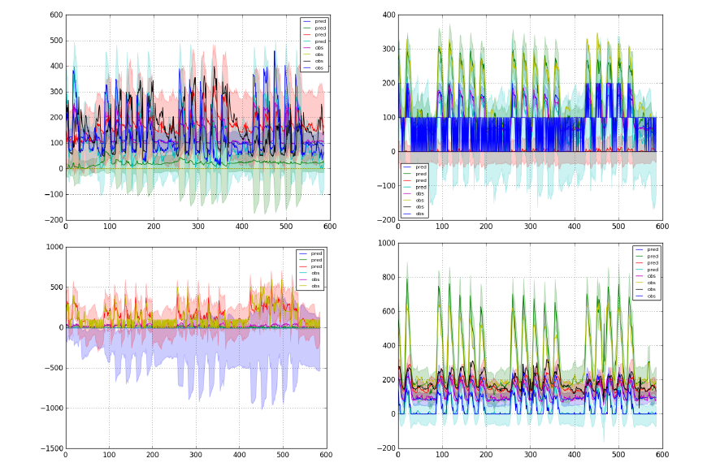
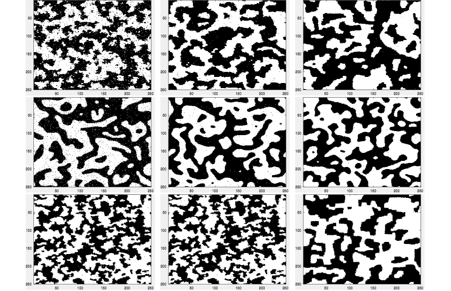
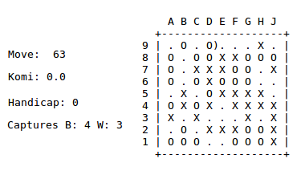
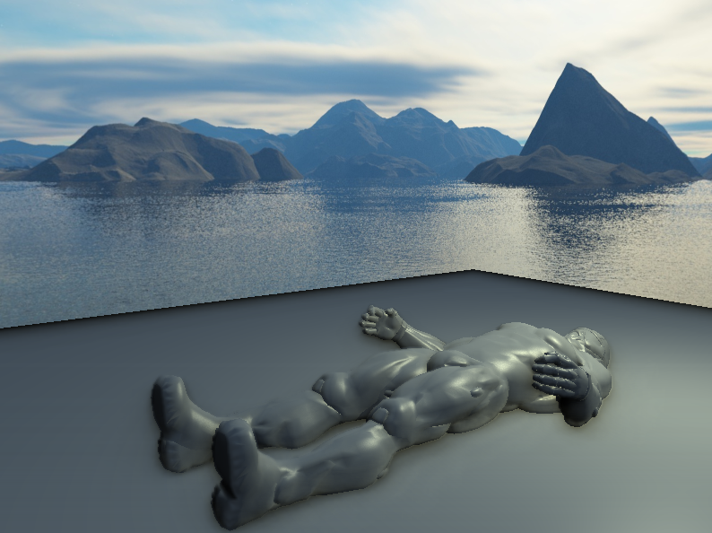
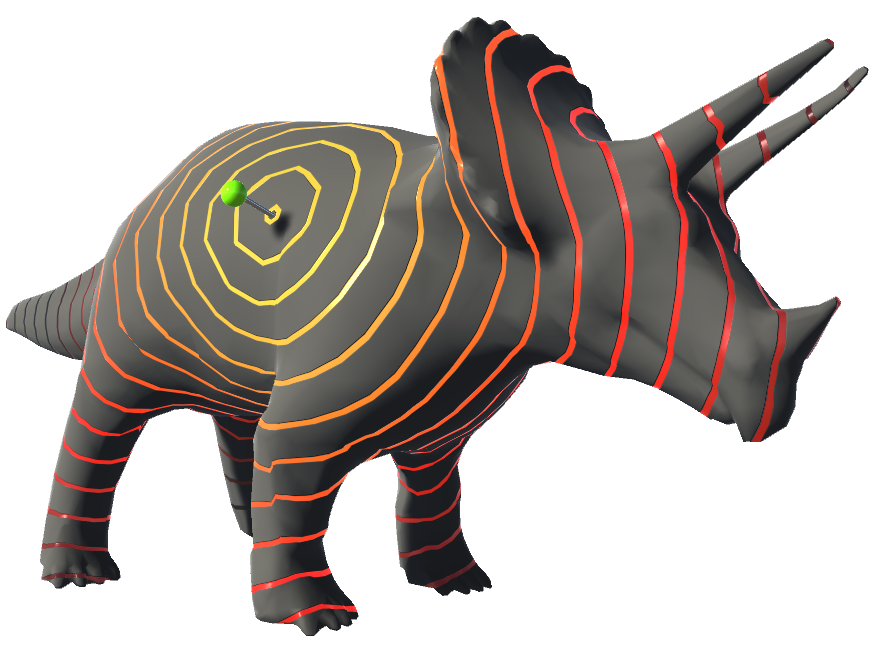
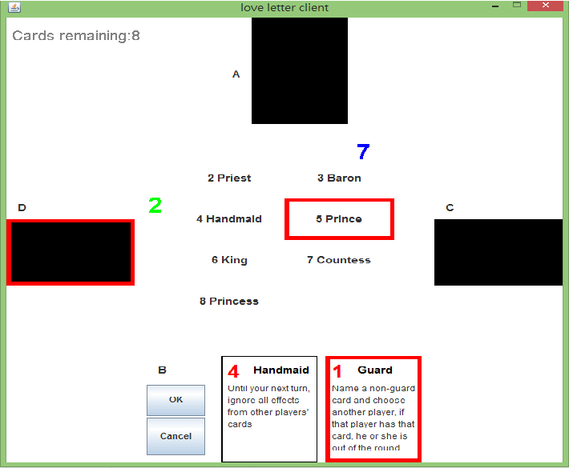
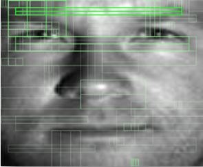

-
Team ORIon
Ioannis Havoutis, Nick Hawes, Lars Kunze, Bruno Lacerda, Chia-Man Hung, Mark Finean, Denis Koksal-Rivet, Stephen Kyberd
Oct 2019
Page
Team Description
Qualification Video
Robocup 2019 Video
Poster
-

-
 State Space Model for the Prediction of Energy Consumption
Dexiong Chen, Chia-Man Hung
Mar 2017
Report
Slides
Github
-
 Variational Methods for Inference
Dexiong Chen, Chia-Man Hung, Baoyang Song
Jan 2017
Report
Poster
Github
-
 Immediate Versus Delayed Rewards for the Game of Go
Chia-Man Hung, Dexiong Chen
Jan 2017
Report
Slides
Github
-
 Real-Time Approximated Global Illumination - From SSAO to SSDO
Chia-Man Hung
Feb 2016
Report
Slides(fr)
Demo.zip
Code.zip
-
Skybox Creation by Photo Fusion
Ruoqi He, Chia-Man Hung
Feb 2016
Report
Demo-web
Demo.zip
Code.zip
Report-ceres
Poster-ceres
Slides-ceres
Demo-ceres.zip
Code-ceres.zip
-
 Shortest Paths on Surfaces - Geodesics in Heat
Ruoqi He, Chia-Man Hung
Nov 2015
Report
Slides(fr)
Demo-windows.zip
Demo-linux.zip
Demo-mac.zip
Github
-
 Multiplayer LAN Card Game - Love Letter
Quei-An Chen, Chia-Man Hung
Jun 2015
Report(fr)
Slides(fr)
App.zip
Code.zip
-
 Face Detection with Boosting
Ruoqi He, Chia-Man Hung
May 2015
Project Description(fr)
Report(fr)
Slides(fr)
-
French National Robotic Competition
Alexis Clariond, Chia-Man Hung, Raymond Li, Yuxiang Li, Étienne Six, Marc Szafraniec, Bruno Taillé
May 2015
Report(fr)
Slides
Slides(fr)